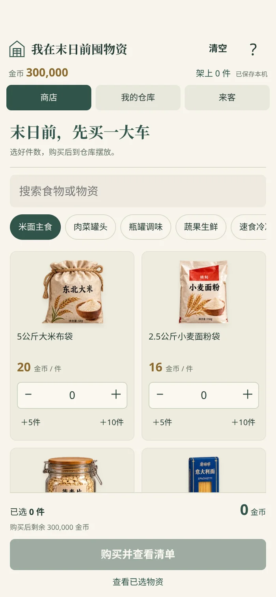
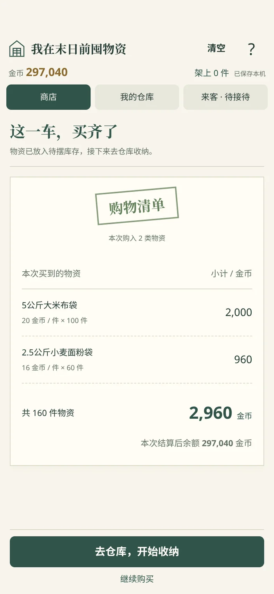
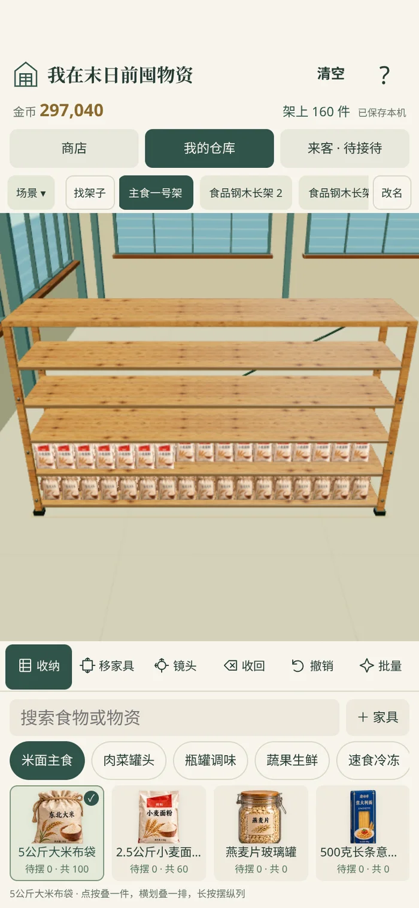
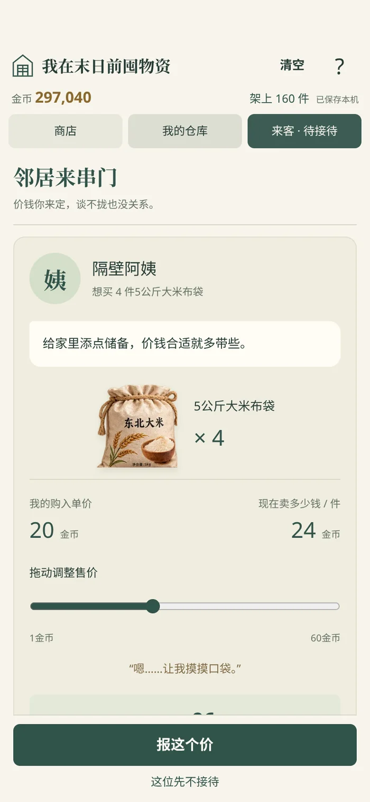

30万金币，买完再收纳
打开新版游戏 下载小红书ZIP 校验摘要
购买物资 → 查看结算清单 → 仓库收纳 → 接待邻居 → 自己报价。旧存档保留，新经济系统的初始金币仅领取一次。

初始30万金币，选择物资和件数 · 实际游戏截图
购买后逐项结算清单 · 实际游戏截图
已购物资收纳与家具命名 · 实际游戏截图
只显示购入单价和实际售价，拖动报价 · 实际游戏截图- 初始300,000金币，首次进入物资商店；逐件设置数量，可用加减、输入和+5/+10快捷键。
- 购买后单独展示购物清单：商品、件数、购入单价、小计、总支出、结算后余额。刷新清单不重复扣款。
- 购买物资进入待摆库存；仓库卡片显示待摆和总拥有数量。摆放消耗库存，收回、清空和移除家具返还库存。
- 邻居求购，页面只显示购入单价、实际售价和成交金额。拖动绝对价格条，客人可能接受或拒绝；一次降价重谈机会，无倒计时。
- 架上出售需明确许可，只从堆叠顶端取物。买卖提交后清除旧摆放撤销记录，防止恢复已出售物资或复制金币。
- 家具可自定义名字、搜索并定位；不再限制24件。60件空家具存档正常进入，远景家具和接触阴影采用实例合批。
- 顶部竖屏至少预留48px、横屏至少36px，采用更大的宿主安全区，清空文字按钮避开状态栏。
- 旧仓库和已存物资保留，仅首次接入新经济系统时发放初始金币。批量收纳只用已购库存，金币与物资均不足时提供应急补给。
查看测试记录